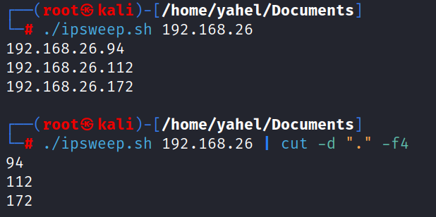

it cuts!
cat ping.txt | grep "64 bytes" | cut -d " " -f 4
d - delimiter, a character that marks the beginning or end of a unit of data. in out case its a space (" "), default delimiter is tab
f - field, the field number, fields are counted by the delimiter, in our case field number 4
example - cut by delimiter "." and output only field 4
